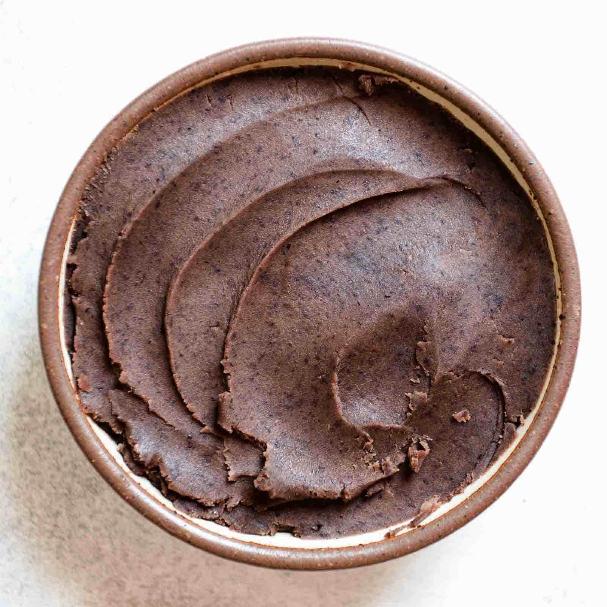

Traditionally made as a dessert for Chinese new year, sticky rice cakes are a soft and chewy dessert that feature a smooth and sweet red bean filling. This recipe is straightforward to prepare and tastes amazing!
Contains milk and eggs.
Ingredients
Yield: 16 servings
16 ounces glutinous rice flour
4 eggs
1¼ cups milk
¾ cups vegetable oil
1 teaspoon baking powder
Red bean paste (or black sesame paste, lotus seed paste, etc.)
Sesame seeds (optional)
Equipment
Baking dish
Large bowl
Whisk
Parchment paper
Saran wrap
Instructions
Preaheat oven to 350°F.
In a large bowl, combine milk, eggs, and oil. Whisk thouroughly.
Add sticky rice flour to wet ingredients in small batches, whisking between each addition. Mix in baking powder. The batter should be thick but not doughy.
Line an oven-safe baking dish with parchment paper. Pour half of the batter into the dish, then spread a thin, flat layer of red bean paste on top, if desired. Cover the layer of filling with the remaining batter. Sprinkle a generous amount of sesame seeds on top, if desired.
Bake for 20 to 30 minutes or until the edges turn golden brown. It's normal for cracks to form on the top surface. A toothpick inserted into the center should come out mostly clean with no wet batter.
Remove from heat and let rest at room temperature for at least 10 minutes. Cut into small, 2 inch square pieces. Serve warm.
Cover with saran wrap for storage; can be refrigerated for up to 1 week. Microwave or reheat individual pieces before consuming for best taste.
Notes
Glutinous rice flour is a finely milled flour that has a soft, chewy texture when cooked. It does not contain gluten. It is common in Asian desserts and can be found in many Asian supermarkets or online.
Red bean paste is the most common filling for this dessert, though black sesame paste and lotus seed paste also work well. These fillings can be found in many Asian supermarkets in small refrigerated pouches or in the canned goods section.
It is best to use a baking dish that is at least 2 inches deep, as thinner layers of batter tend to be ideal. Also, the batter rises slightly in the oven.

Red bean paste can get very sticky and messy when handling. For best results, refrigerate your filling until you are ready to use it. This will allow it to harden slightly, making it easier to spread into a thin layer.